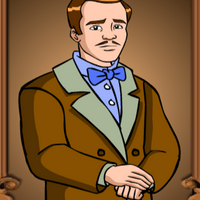

Juan Crisostomo Ibarra y Magsalin (also known as Simoun)
Juan Crisostomo Ibarra y Magsalin, otherwise known as Crisostomo Ibarra is one of the main characters of the story.
He is from San Diego but studied for seven (7) years in Europe. Upon his return, his father had died, and continued to push to establish a school which was his dream.
Ibarra was engaged to Maria Clara, and after making many enemies, went under the new alias "Simoun".
Maria Clara de los Santos (also known as Maria Clara)
Maria Clara de los Santos, otherwise known as Maria Clara is one of the main characters of the story.
She is the adopted daughter of Kapitan Tiago, and the fiancee of Crisostomo Ibarra.
In a sudden turn of events, it is revealed that her real father was Padre Damaso. After the rumoured death of Ibarra, she became a nun, and died in 1895.
Elias
Elias is a side character, and comes later in the book.
He is known as a "spokesman of the oppressed", and a life of tragedy, however he was saved by Crisostomo Ibarra.
He was a close friend of Crisostomo Ibarra, and saved his life on numerous occasions.
Santiago de los Santos (also known as Capitan/Kapitan Tiago)
Santiago de los Santos, otherwise known as Captain/Kapitan Tiago, is a wealthy nobleman, and close to the other elites of San Diego.
Kapitan Tiago is the legal father of Maria Clara.
Damaso Verdolagas (also known as Padre Damaso)
Damaso Verdolagas, otherwise known as Padre Damaso is a corrupt, brash and wicked man, and the former curate of San Diego.
He had mercilessly ruined the life of Don Rafael Ibarra, even beyond the grave, and abused his position.
Thankfully, justice was served, and Padre Damaso was punished for his actions, being relocated to another city. He is the real father of Maria Clara
Bernardo Salvi (also known as Padre Salvi)
Bernardo Salvi, otherwise known as Padre Salvi, replaced Padre Damaso as the curate of San Diego.
He engaged in a rivalry with San Diego's Alperes, and in the process, had gained great influence over the people of San Diego.
It was Padre Salvi who orchestrated the downfall of Crisostomo Ibarra.

Don Rafael Ibarra
Don Rafael Ibarra is the father of Crisostomo Ibarra.
He is one of the richest men in San Diego.
He was imprisoned by Padre Damaso after accidentally killing a tax collector. He died in prison, and even beyond the grave, was tormented and disrespected by Padre Damaso.
Anastasio (also known as Pilosopo Tasio)
Anastasio, otherwise known as Pilosopo Tasio was a wise and smart man.
He was thought to be insane because of his surreal ideas.
He served as an adivser to several individuals in San Diego.
Narcisa (also known as Sisa)
Narcisca, otherwise known as Sisa, was the mother of Basilio and Crispin.
After Crispin died, and Basilio went missing, Sisa lost her sanity and went crazy.
She eventually died due to her insanity.
Crispin
Crispin was the youngest son of Sisa, and younger brother of Basilio.
At ony eight (8) years old, he served as a sacristan in the San Diego church. There, he was falsely accused by the head sacristan for stealing money, and was killed, presumably by the head sacristan.
Basilio
Basilio was the eldest son of Sisa, and the older brother of Crispin.
Following the death of Crispin and his mother, he was taken in by Kapitan Tiago.
Donya Victorina de Espadaña (also known as Donya Victorina)
Donya Victorina de Espadaña, otherwise known as Donya Victorina, was a socialite and friend of Kapitan Tiago.
Her and her husband, Don Tuburcio, sought fame, and thus associated themselves with the elites of San Diego.
Don Tiburcio de Espadaña (also known as Don Tiburcio)
Don Tiburcio de Espadañ, otherwise known as Don Tiburcio was the husband of Donya Victorina.
He was a false surgeon, he earned that title after his wife, Donya Victorina, lied about him to gain social status.
Donya Consolacion
Donya Consolacion was an old and wicked woman, and is married to the Alperes.
She is obessed with makeup, and often repremands the Alperes ang gets into fights with people.
Alperes
The Alperes remains unamed, however, we do know that he is the husband of Donya Consolacion.
He is the commander of the Civil Guard stationed in San Diego.
He was locked in a serious rivalry against Padre Salvi, and in doing so, ruined the lives of innocent people.
Isabel Alba (also known as Tiya Isabel)
Isabel Alba, otherwise known as Tiya Isabel, is the aunt and caretaker of Maria Clara.
Following the death of Maria Clara's mother, she served as the motherly figure in Maria Clara's life. She is the cousin of Kapitan Tiago.
She is the head caretaker of the de los Santos home.